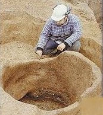

|
by
Tanners transformed animal skins or hides into leather. The tanner stood between hunters and butchers (the suppliers of skins) and leatherworkers who made commercial products from the tanned hides. While few early Albany people would have considered tanning to be their primary occupation, many butchers and leather workers had some first-hand experience with the operation. Merchants also owned tanning pits and then tanneries. Throughout the pre-industrial era, tanners were an important part of early Albany's Production Economy! The tanning process required a supply of skins, a supply of tannin, a tanning pit (preferably near a supply of running water), a location away from densely inhabited areas, on-call labor to scrape and flush the skins, and patience as many months might pass before yielding an acceptable leather product. Many steps were employed to turn skins into leather - although the number and order seem to be variable. Leather-related trades probably were the most prevailent production activity in early Albany. Leather workers sometimes operated their own tanning pits. By the early 1700s, tanning pits were located along Foxes Creek to take advantage of the stream's running water. Leatherworkers often owned or operated tanning pits to help ensure a supply of hides. As early as 1681, shoemaker Cornelis Van Schelluyne also owned a tannery outside Albany's north gate. The third ward assessment roll in 1779 noted two tan yards. After the Revoilution, Philip Van Rensselaer's Bethlehem farm included tannery and brew house - both of which probably drew water from the Normanskill. His brother-in-law, merchant Abraham A. Lansing, produced leather used to make firebucktets. Tanner Daniel K. Winne held a number of lots along Foxes Creek. Cordwainer Bernardus Evertsen also was among the Foxes Creek tanners. By the 1790s, newcomer William Charles and his son were butchers and tanners whose operations utilized the Beaverkill. By the early nineteenth century, more elaborate tanneries were located in the South End of the city. In 1813, a Gazetteer reported 31 tanneries in Albany County. This page will evolve a more early Albany specific discussion of the tanning process and its practicioners! Sources: This exposition relies on Lucius F. Ellsworth, "The New York State Tanning Industry to 1900" (unpublished manuscript in the collection of the CASHP, 1971). For basic visualization, see Denis Diderot, A Diderot Pictorial Encyclopedia of Trades and Industry! Animal hides used to make leather: deer, horse, cattle. Leather trades included the shoemaker, cordwainer, saddler, bootmaker, and currier who treated the final product with oils. Cobblers repaired leather products. Buckskins and britches! first posted: 10/20/02; updated 12/24/11 |